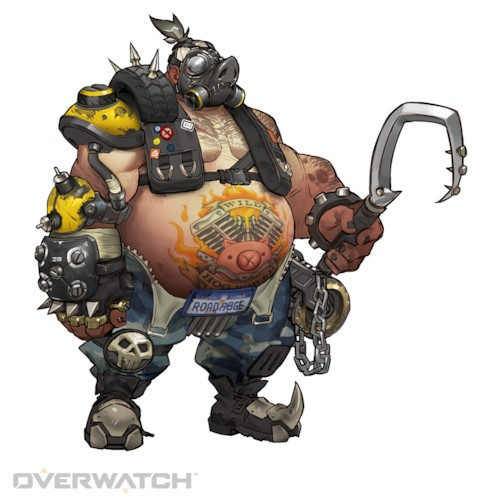

로드호그 [돌격]
소개
본명: 마코 러틀리지, 연령: 48
직업: 집행자 (예전 기록), 경호원
활동 근거지: 호주, 쓰레기촌 (예전 기록)
소속: 쓰레기들 (예전 기록)
"나는 재앙을 불러온다."
로드호그는 무자비한 살인마이며, 그 잔혹함과 파괴적인 성향으로 악명이 자자하다.
옴닉 사태 이후, 호주 정부는 조국을 거의 파괴하다시피 한 옴닉들에게 호주 옴니움과 그 주변 땅을 내주고 장기간의 평화 협정을 맺으려 했다. 이 협정으로 마코 러틀리지를 비롯해 호주 내륙에 점점이 흩어져 살고 있던 생존주의자, 태양광 발전 종사자들, 그리고 그저 조용히 홀로 살고 싶었던 수많은 거주민은 영영 내륙 밖으로 추방되었다.
집을 잃고 격분한 마코와 거주민들은 거센 폭동을 일으켰다. 이들은 호주 해방 전선을 형성하고 옴니움과 로봇을 공격하여 빼앗긴 땅을 되찾으려 했다. 폭동은 그 기세를 더해갔고, 결국 이들은 옴니움의 핵융합로를 파괴하기에 이른다. 이 폭발은 시설을 파괴했고, 주변 지역을 방사능에 오염시켰으며, 수천 킬로미터 주위를 뒤틀린 고철과 잔해로 뒤덮었다.
마코는 고향이 황무지로 변하는 대참사를 두 눈으로 목격하고는 영영 다른 사람이 되어버렸다.
마코는 가면을 뒤집어쓴 채 고물 바이크를 타고 호주 내륙의 부서진 도로 위를 달리고 또 달리며 환경에 적응해갔다. 그 과정에서 그의 인간성은 조금씩 사라지고 있었다. 그리고 마침내 마코의 마지막 흔적이 사라지던 날, 잔혹한 살인마 로드호그가 태어났다.